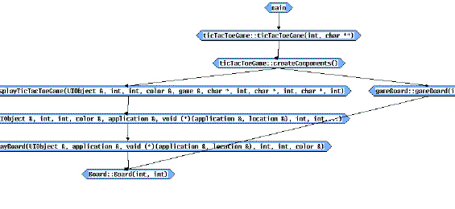

Create the graph
1 Select the Create button.
The following shows a partial Graph view.

The Graph dialog box remains open even after building the view. You can use it to create an ASCII report.
2 In the Graph dialog box, click Save to File.
3 Click the text field adjacent to the Save to File button.
4 Enter the absolute path of an output file (it does not have to already exist), for example:
/tmp/graph.dat
5 Click Create.
DIScover creates the following text report:
{main}
|E| = 4
0. ticTacToeGame::ticTacToeGame(int, char **)
1. ticTacToeGame::createComponents()
2. gameBoard::gameBoard(int, int)
3. Board::Board(int, int)
|E| = 6
0. ticTacToeGame::ticTacToeGame(int, char **)
1. ticTacToeGame::createComponents()
2. displayTicTacToeGame::displayTicTacToeGame
(UIObject &, int, int, color &, game &, char *,
int, char *, int, char *, int)
3. DisplayApp::DisplayApp(UIObject &, int, int,
color &, application &, void (*)(application &,
location &), int, int,...)
4. DisplayBoard::DisplayBoard(UIObject &,
application &, void (*)(application &,
location &), int, int, color &)
5. Board::Board(int, int)
[2]